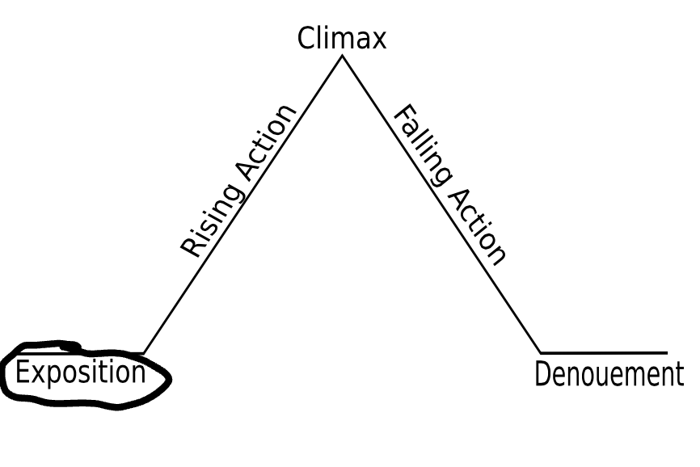

Exposition
The exposition of Akata Witch introduces the main character, Sunny Nwazue, and her life in Aba, Nigeria. Sunny is a 12-year-old girl who lives with her family in a small apartment. She is a bright and curious girl, but she is also shy and insecure. Sunny's life changes when she discovers that she is a Leopard Person, a powerful being with magical abilities. The exposition also introduces the other main characters in the novel, including Sunny's friends Orlu and Chinenye, and her mentor, Madame Koi Koi.
